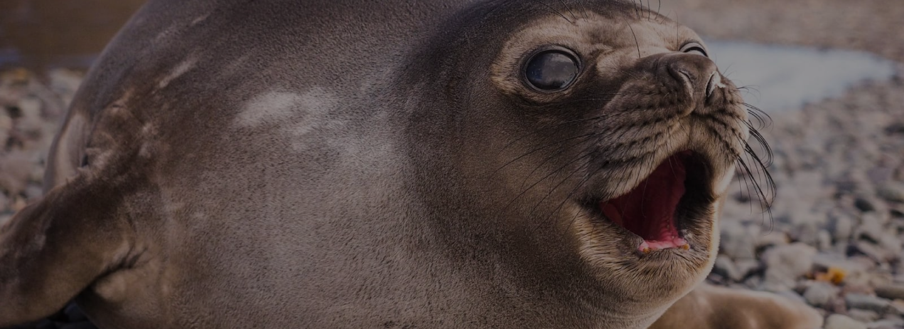

ORIGINE: ANIMALE
FOCA MONACA
La foca monaca è un mammifero acquatico che vive nelle acque calde del Mar Egeo e Mar MEditerraneo.
INQUINAMENTO ACQUIFERO
PERCHÈ È IN VIA DI ESTINZIONE?
La foca monaca è uno degli animali più in pericolo di estinzione; infatti, ne restano solamente 500 il tutto il mondo. Questo accade per via della caccia da parte dell'uomo della loro pelle e grasso e per le varie imbarcazioni che inquinano facendo ammalare gli animali.
- Dimensioni: è di grandi dimensioni, raggiunge i 350 kg di peso e 3 metri di lunghezza.
- Vita media: 20/25 anni.
- Colore: manto grigio/marrone e sul petto ha una macchia bianca irregolare.
- Alimentazione: pesci, polpi e crostacei.
- Stile di vita: È un animale che in gruppo ma riesce a vivere anche da solitario.
- Curiosità: è conosciuta per la sua goffaggine e lentezza in terra ma allo stesso modo per la sua velocità e scioltezza in acqua.are in apnea in ad una alta profondità.